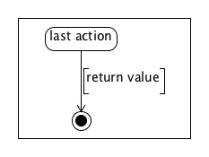

Returns (Functions / Class Methods)
The returns inside a function / class method should be picked up automatically, without the need for annotations . Annotations can be used to further specify the return value.
annotation (Optional)
...
//$ last action
CODE
//$ [user-defined return value]
return value;
...
representation in the diagram
a) the return is in the main flow of actions

b) the
return is inside a non-annotated IF-statement or loop.
[The arrow is dashed, curved and comes from the action that contains the return statement.]
In general, the returns have zoom level 0.